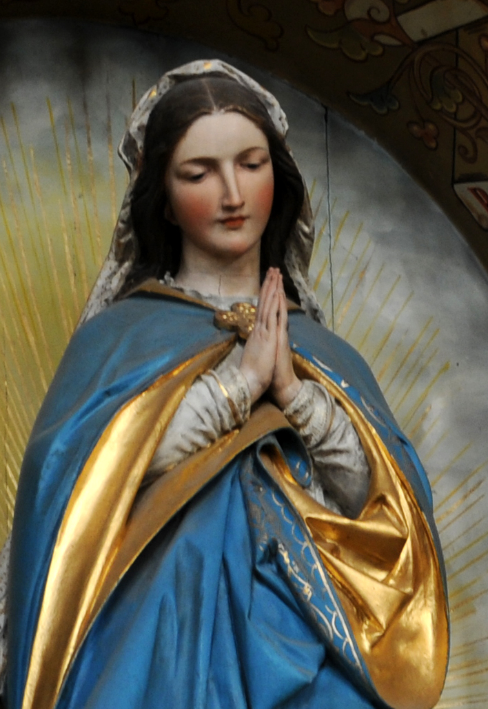

Queen of Heaven
Date- 22th August
22th August is the date when the Virgin Mary was named as "Queen of Heaven"
According Christianism her son Jesus Christ was the spiritual king of the Universe, So the christians named her as the "Queen of the Heaven".
